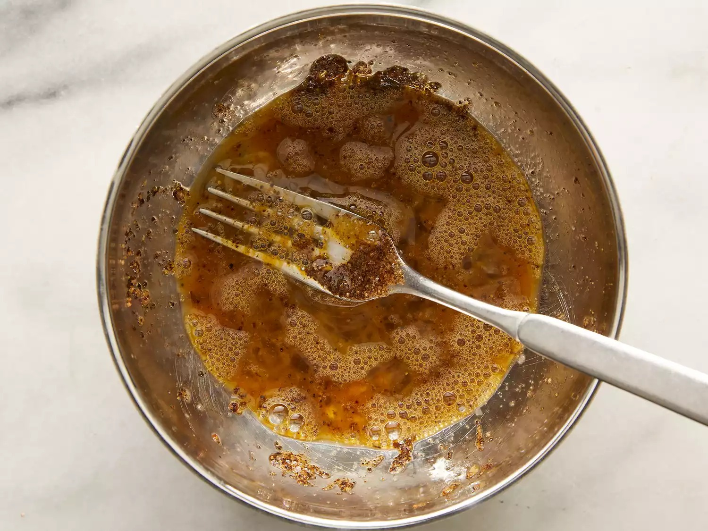
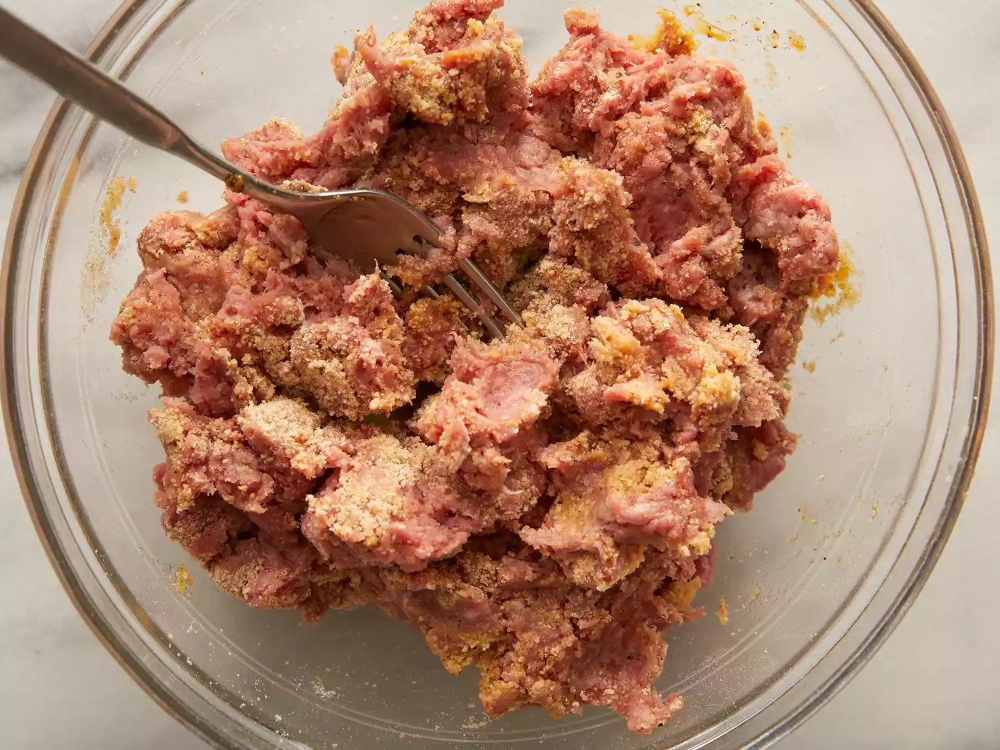
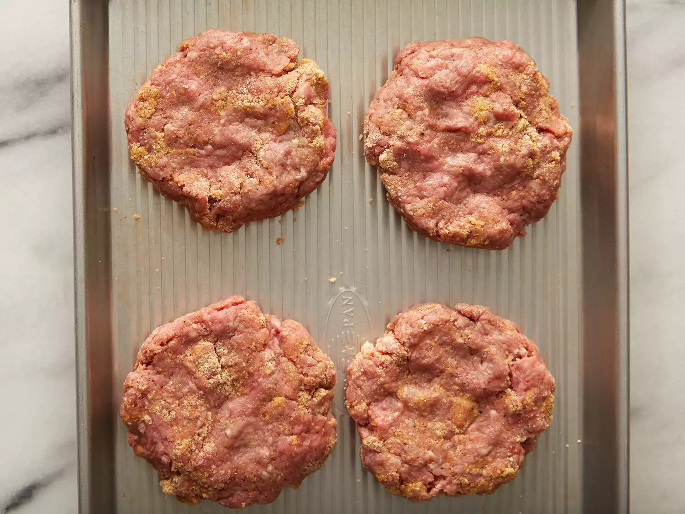
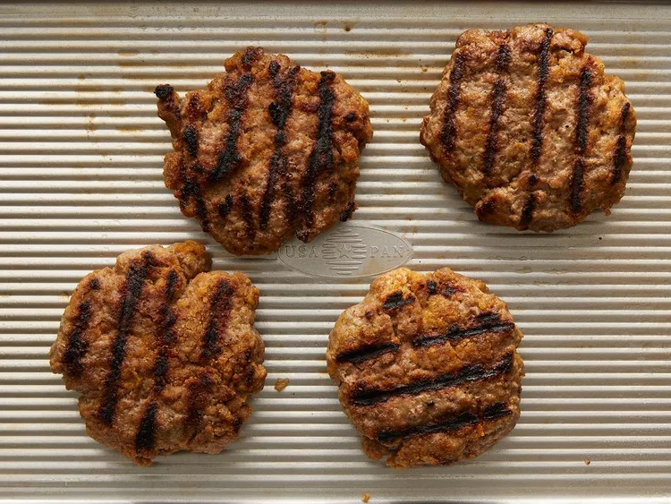
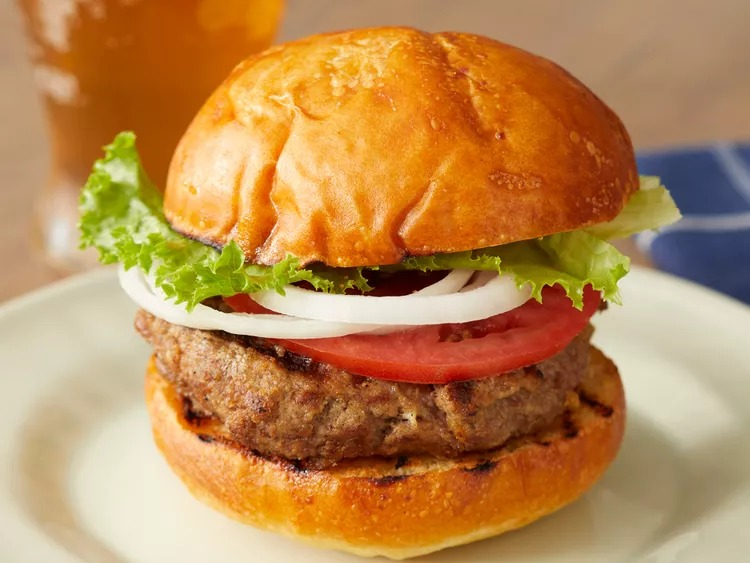

Home
Burger Patties

Description
Burger patties that you can use for anything!
Ingredients
- 1 large egg
- 1/2 teaspoon salt
- 1/2 teaspoon ground black pepper
- 1 pound ground beef
- 1/2 cup fine dry bread crumbs
Steps
- Preheat an outdoor grill for high heat and lightly oil grate.
- Whisk egg, salt, and pepper together in a medium bowl.

- Add ground beef and bread crumbs; mix with your hands or a fork until well blended.

- Form into four 3/4-inch-thick patties.

- Place patties on the preheated grill. Cover and cook 6 to 8 minutes per side, or to desired doneness. An instant-read thermometer inserted into the center should read at least 160 degrees F (70 degrees C).

- Serve hot and enjoy!
